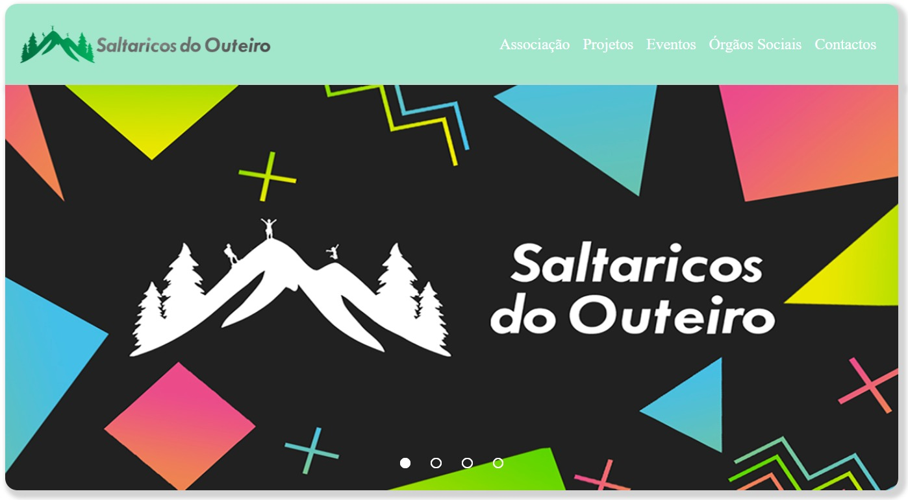
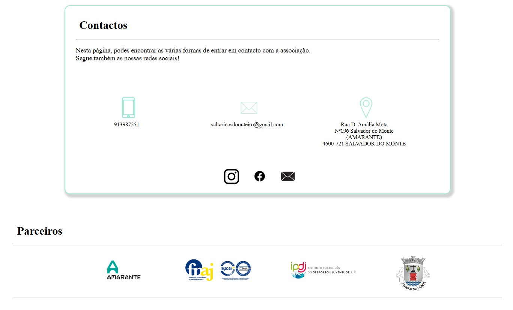
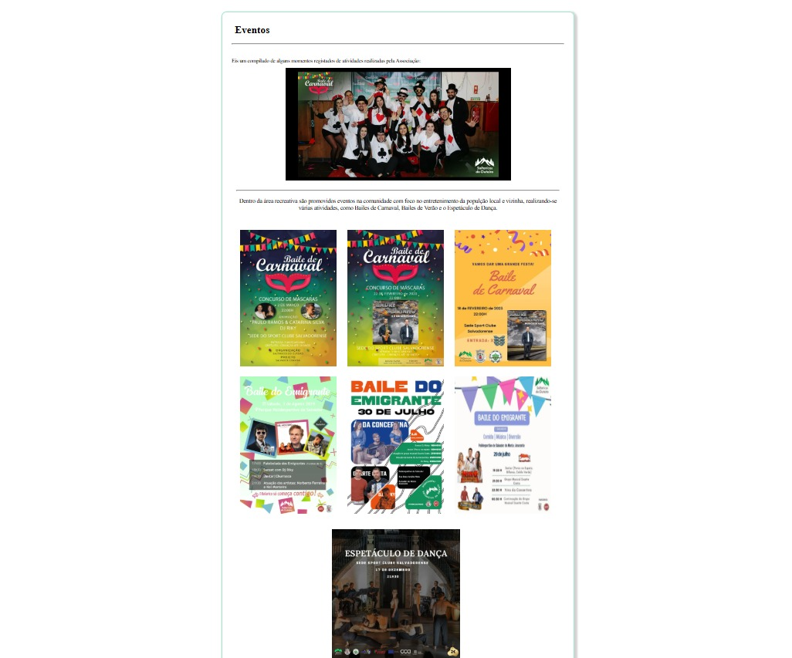
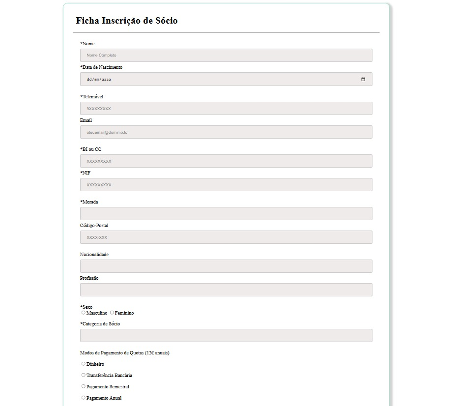
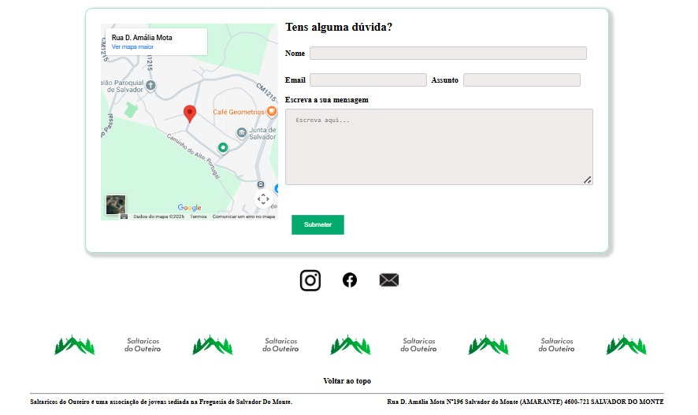

Saltaricos do Outeiro
GÉNERO
WebSite
Linguagens Utilizadas
HTML | CSS | JAVASCRIPT
ANO
2023
Desenvolvimento de uma plataforma web institucional para a associação "Saltaricos do Outeiro", focada em dinamizar a comunicação com a comunidade jovem. O projeto prioriza uma interface limpa e organizada, facilitando o acesso a eventos, notícias e atividades promovidas pela organização
↗ Código no GitHub
HOMEPAGE

CONTACTOS

EVENTOS

FORMULÁRIO DE REGISTO

FOOTER
